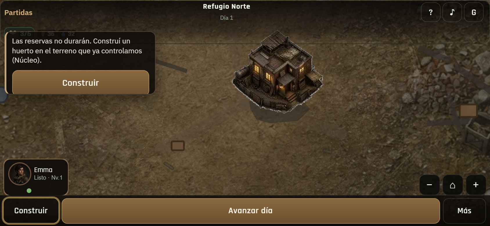
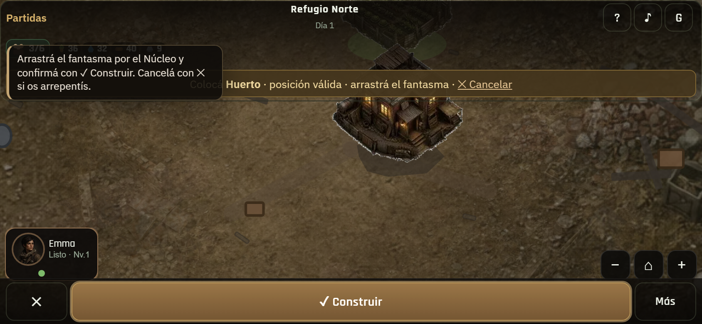
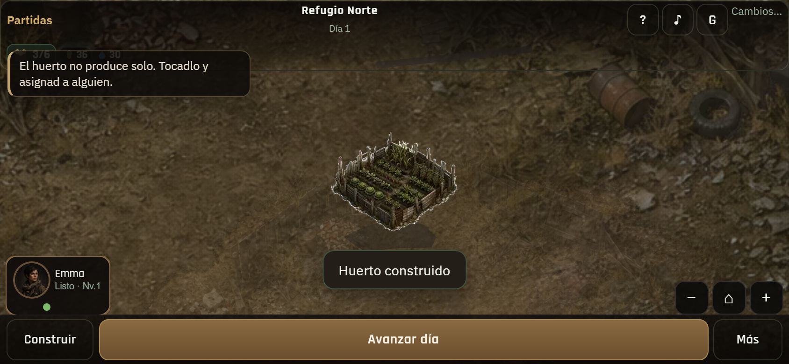
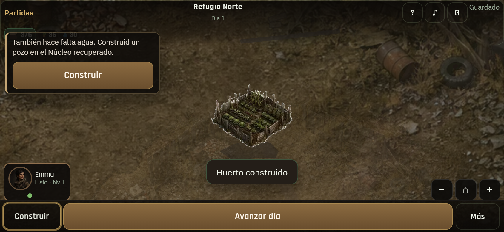
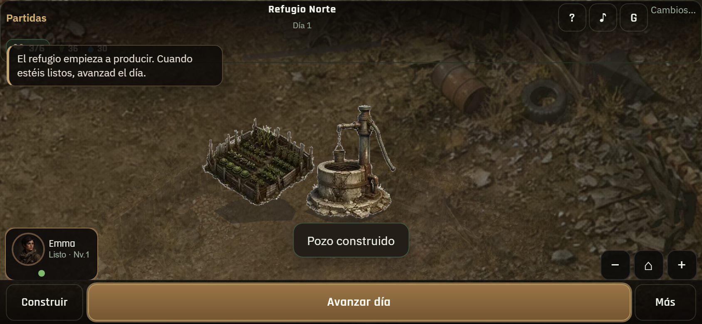
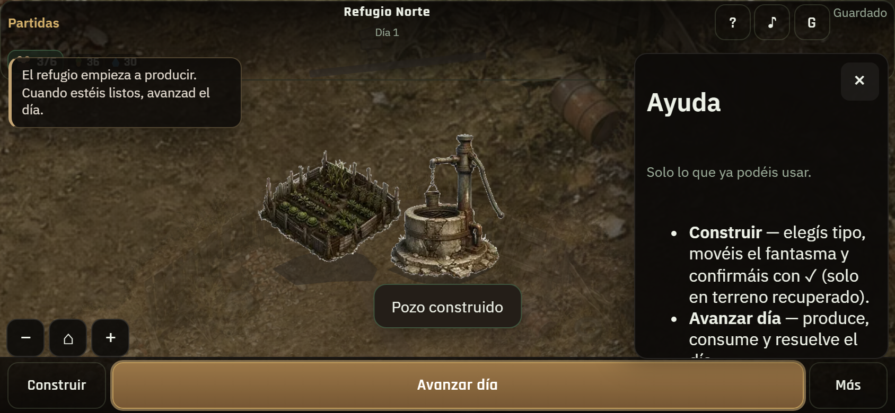
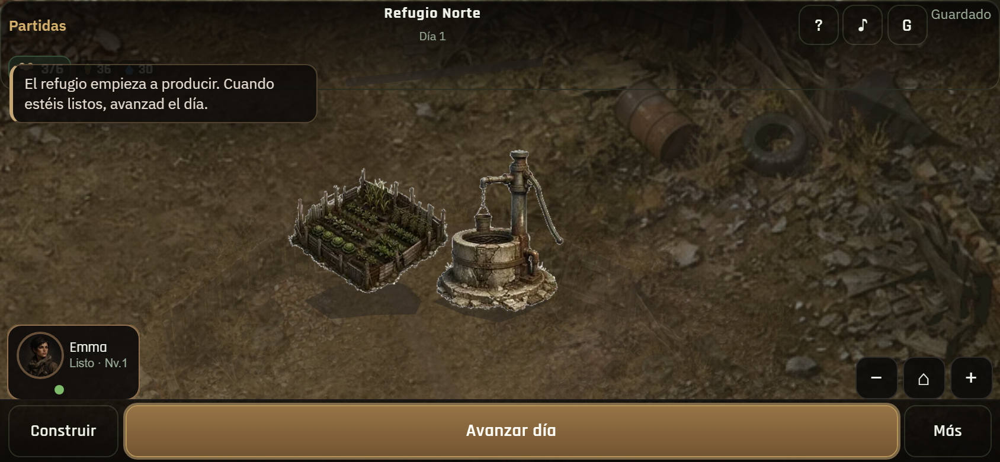
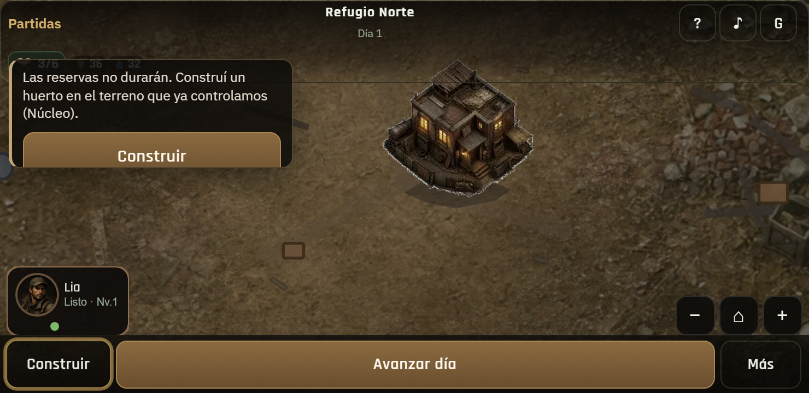
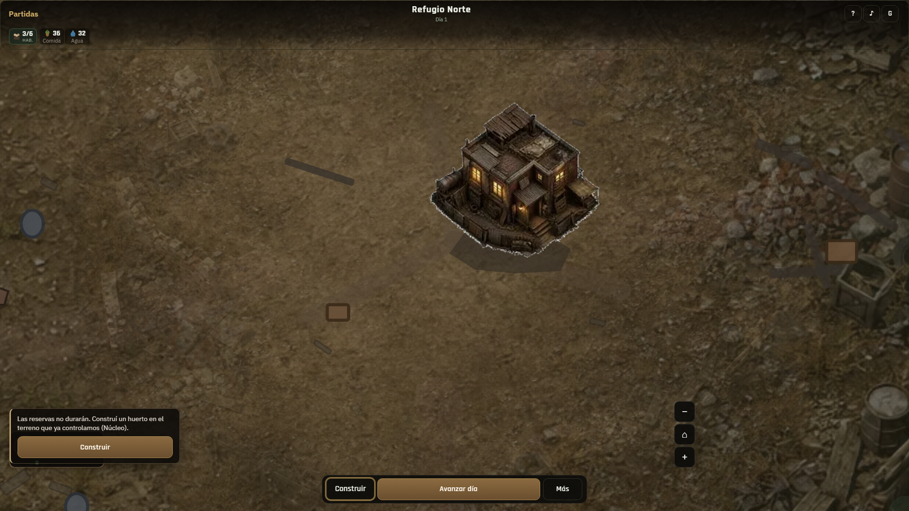
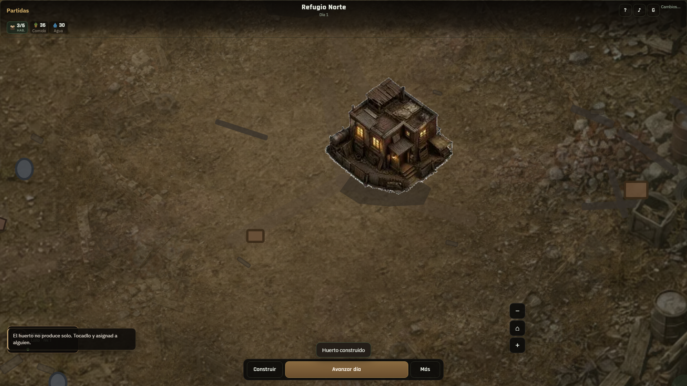

01 · Coach comidaUna pista · Núcleo · Construir pulsa

02 · Ghost + tip ✓Arrastrá fantasma · confirmá con ✓

03 · Staff huertoAvance natural tras construir

04 · Coach aguaSiguiente tip · sin Continuar

05 · Listo avanzarTip final · pulso Avanzar día

06 · Ayuda §21.3Consulta · ghost/✓ · pan

07 · 844×390Landscape tutorial

08 · 740×360Coach legible

09 · DesktopMisma guía en mundo

10 · Desktop progresoHuerto + tip staffing